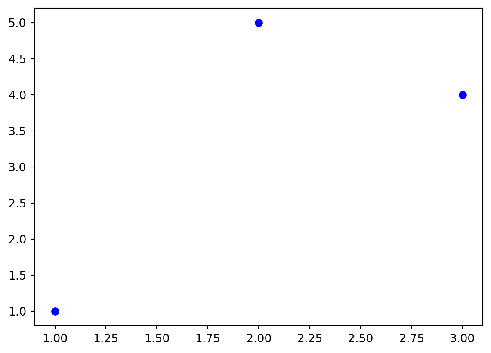
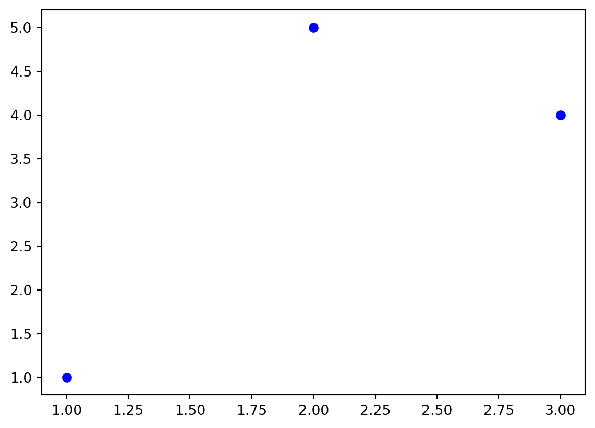
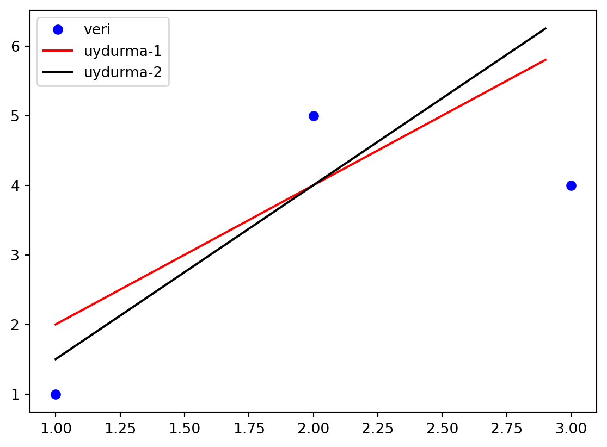
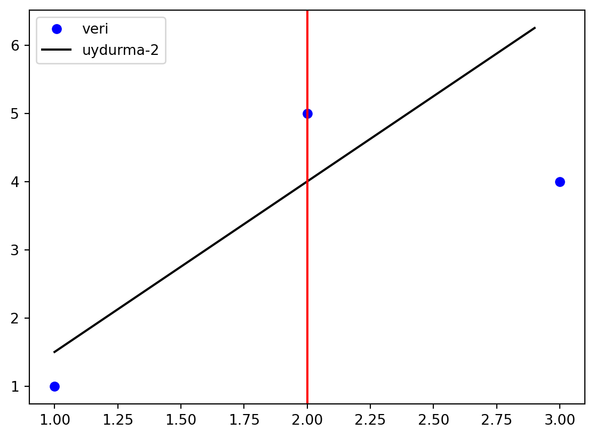
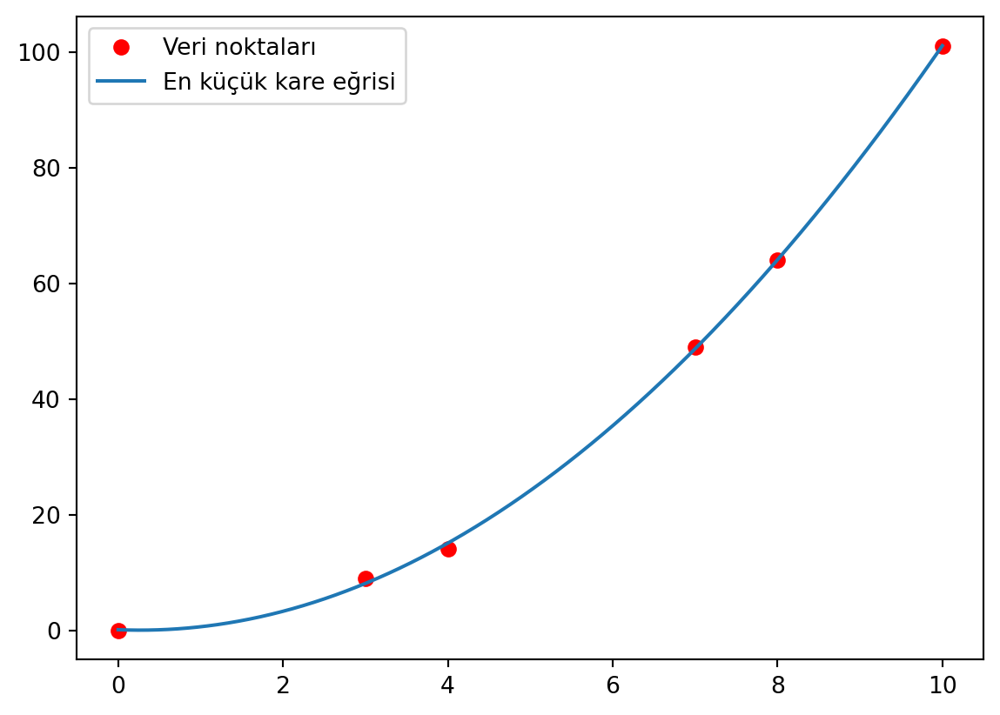

import numpy as np
import matplotlib.pyplot as plt
plt.plot([1,2,3], [1,5,4], 'o', label='veri', color='blue')
plt.show()
Bir deney yaptığımızı düşünelim. Bu deney sonucunda, sabit hızla giden bir aracın zamanla konumunun nasıl değiştiği bilgisini elde ettiğimizi varsayalım. Öyle ki doğrulamak istediğimiz formül aşağıdaki gibi olsun.
\[ y= y_{0} + vt \]
Deneyde aracın konumunu aşağıdaki gibi ölçmüş olalım.
| Zaman (s) | Konum (m) |
|---|---|
| 1 | 1 |
| 2 | 5 |
| 3 | 4 |
Bu deney verisine bakıp hızı tahmin etmeye çalışacağız. Verinin grafiğini çizelim.
import numpy as np
import matplotlib.pyplot as plt
plt.plot([1,2,3], [1,5,4], 'o', label='veri', color='blue')
plt.show()
Yukarıda çizilen noktaların bir doğru üzerinde olmasını beklerim, çünkü doğrulamak istediğim formül \(y(t)=y_{0} + vt\) yani doğrusal bir fonksiyondur. Görüldüğü üzere deneysel “hatalar” veya başka sebeplerden dolayı noktalar doğru üzerinde değil. Dolayısıyla hızı bulamayız.
Soru şu: Ben bu veriden nasıl hızı bulabilirim? Bu veri noktalarına en yakın doğruyu çizerek bir doğru elde ederim ve o doğrunun eğiminden hızı bulurum.
Eğri uydurma bu yapılan işleme denir. Veri noktalarına uymasını beklediğim ama verinin tüm noktalarına uymayan bir formül elde etmeye çalışmaktır.
Eğri uydurma işlemi yaparken uydurmak istediğim fonksiyon ve ona ait veriler olmak zorundadır. Veriyi bir doğru için mi uyduracağım (fitting) yoksa eksponansiyel bir fonksiyona mı uyduracağım bilmem lazım.
Eğri uydurma amacıyla yapılan uydurma yöntemlerinden bir tanesi en küçük kareler yöntemidir. Örneğin 3 noktayı bir doğru için uydurma yapmak istiyoruz. Bu işlemi yaparken de rastgele iki doğru çizelim. import numpy as np import matplotlib.pyplot as plt
import numpy as np
import matplotlib.pyplot as plt
def uydurma_1(x):
return 2*x
def uydurma_2(x):
return 2.5*x-1
xYeni= np.arange(1,3,0.1)
plt.plot([1,2,3], [1,5,4], 'o', label='veri', color='blue')
plt.plot(xYeni, uydurma_1(xYeni), color='red', label='uydurma-1')
plt.plot(xYeni, uydurma_2(xYeni), color='black', label='uydurma-2')
plt.legend()
plt.show()
Yukarıda gördüğünüz grafikte “uydurma-1” ve “uydurma-2” grafiklerinden hangisinin daha iyi sonuç verdiğini belirlememiz gerekmektedir. Bunun için veri noktalarından uydurma çizgilerine en yakın düşey çizgileri çizeceğiz.
Çizginin üzerindeki düşey çizgilerin karelerinin toplamı, çizginin altındaki düşey çizgilerin karelerinin toplamı ile aynı ise çizilen çizgi en iyi şekilde uydurmuş demektir. Bu yönteme en küçük kare uydurma yöntemi denir.
En küçük kare uydurma yönteminde uydurma eğrisine çizilen çizgi düşey olmak zorunda değildir. Daha ayrıntılı bilgi için https://mathworld.wolfram.com/LeastSquaresFitting.html adresine bakabilirsiniz.
import numpy as np
import matplotlib.pyplot as plt
def uydurma_2(x):
return 2.5*x-1
veri= np.array([[1,1],
[2,5],
[3,4]])
plt.plot(veri[:,0],veri[:,1],'o', label='veri', color='blue')
# Line
xYeni= np.arange(1,3,0.1)
plt.plot(xYeni, uydurma_2(xYeni), color='black', label='uydurma-2')
# vertical line between line and veri
# Vertical line between y=3 and y=1
print(uydurma_2(veri[1,0]))
plt.axvline(x=veri[1,0], ymax=5.5, color='red')
plt.legend()
plt.show()4.0
import numpy as np
import matplotlib.pyplot as plt
data1 = np.array([[0, 0], [3, 9], [4, 14], [7, 49], [8, 64], [10, 101]])
# Kaçıncı derecden polinom ile uydurmak istediğimizi belirtiyoruz.
# 1 -> Doğrusal, 2 -> Karesel, 3 -> Kübik, 4 -> 4. dereceden vb.
degreeOfFit= 3
# En küçük kare uydurma
katsayilarDizisi= np.polyfit(data1[:,0], data1[:,1], degreeOfFit)
# Uydurulan polinomun katsayılarını yazdır
if degreeOfFit== 1:
egim= katsayilarDizisi[0]
y0= katsayilarDizisi[1]
print("y= (%.1f)*x + (%.1f)" % (egim, y0))
# Uydurulan doğrunun denklemini oluşturan bir obje yarat.
enKucukKare_EgriUydur= lambda x: egim*x + y0
elif degreeOfFit== 2:
print("y= (%.1f)*x**2 + (%.1f)*x + (%.1f)" % (katsayilarDizisi[0], katsayilarDizisi[1], katsayilarDizisi[2]))
# Uydurulan doğrunun denklemini oluşturan bir obje yarat.
enKucukKare_EgriUydur= lambda x: katsayilarDizisi[0]*x**2 + katsayilarDizisi[1]*x + katsayilarDizisi[2]
elif degreeOfFit== 3:
print("y= (%.1f)*x**3 + (%.1f)*x**2 + (%.1f)*x + (%.2f)" % (katsayilarDizisi[0], katsayilarDizisi[1], katsayilarDizisi[2], katsayilarDizisi[2]))
# Uydurulan doğrunun denklemini oluşturan bir obje yarat.
enKucukKare_EgriUydur= lambda x: katsayilarDizisi[0]*x**3 + katsayilarDizisi[1]*x**2 + katsayilarDizisi[2]*x + katsayilarDizisi[3]
# Çizdirilecek data noktalarını belirleyelim.
x= np.linspace(np.min(data1[:,0]), np.max(data1[:,0]), 1000)
# Eğriyi çizdirelim.
plt.plot(data1[:,0], data1[:,1], 'ro',label= 'Veri noktaları')
plt.plot(x, enKucukKare_EgriUydur(x), label= 'En küçük kare eğrisi')
plt.legend()
plt.show(); plt.close()y= (-0.0)*x**3 + (1.1)*x**2 + (-0.6)*x + (-0.57)